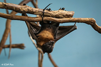
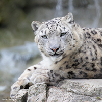

Animales
En este Zoológico podemos encontrar toda clase de animales y plantas
Animales Nocturnos

Inaugurado en mayo de 2011, "Cazadores Nocturnos" es un área que alberga una gran mayoría de los animales nocturnos, como búho real, cerdo hormiguero, murciélagos vampiro, pitón de Birmania, fénec y fosa, pero también casas de varias especies de gato salvaje, como manules, ocelotes, pantera nebulosa, gato pescador, gato de las arenas y caracales.
Felinos

Inaugurado en el verano de 2012, el "Cañón de los Felinos" es un área que muestra la mayoría de las especies del zoo de grandes felinos, incluyendo leopardo de las nieves, puma, tigre malayo y tigre de Bengala blanco.
Aves
Un recorrido aviario que permite a los visitantes interactuar con Lori arcoiris. Los visitantes también pueden comprar palos con semillas y tazas de néctar para alimentar a los loros. ganso urraco, tardo canelo, Kea, Lori de cabeza negra y gansos del Cabo Barren que viven en la pajarera.